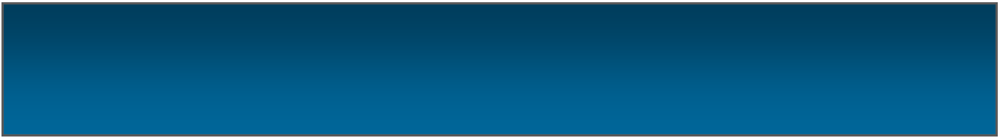
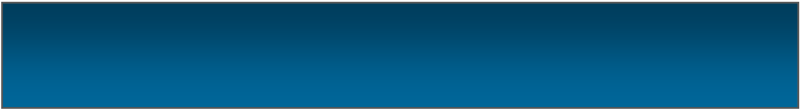

|
Announcement |
|
Sorry for bad English I’m in a hurry. After a huge delays (about 3 months) I’m announcing that I am stopping active work on this website and all my projects. This doesn’t mean everything is getting discontinued, there may be some updates in the future but I can not guarantee that. All apps and websites will continue working like before. Thanks for visiting! |

|
www.renatogr.cf Desktop 4.5 is out!! |
|
After a HUGE delay of about 3 months rgd 4.5 is finally out. Why did i skip version 4.4? Simple, this was a "major" UI remake and it was different and number 4.4 is not really pretty. New stuff that rgd 4.5 brings is: Left side navigation bar, New page buttons, more text places including one with image on home, better widget arrangement, better search, news and apps page and more. |


|
We also have a Discord server! |
|
We had a Discord and Guilded server for a quite some time now. There you can ask for help if you don’t understand how to do something. Maybe you are just bored but our server is too. Though it is not so lonely like this poor website is. |

|
This is just temporary. |